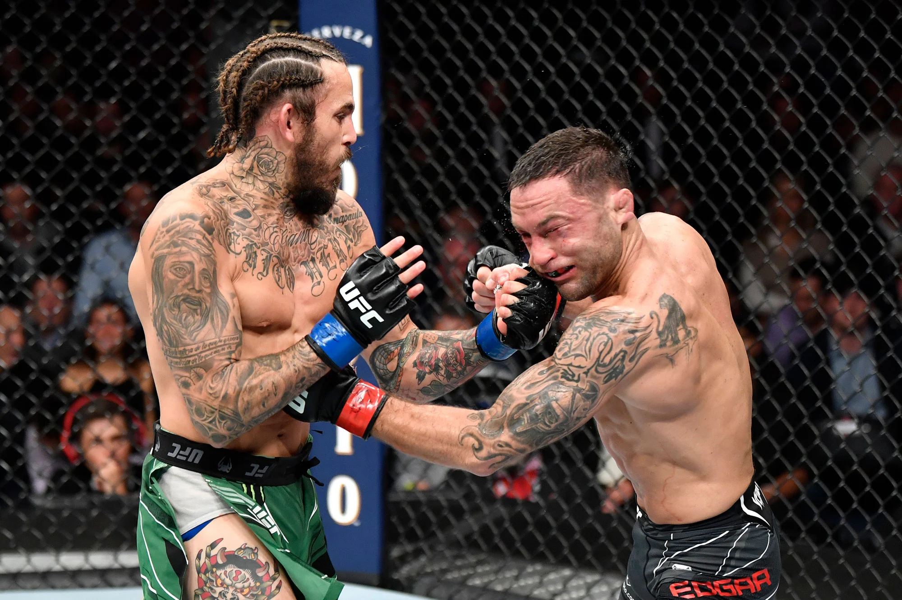
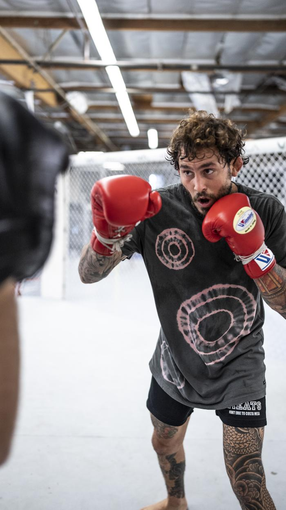
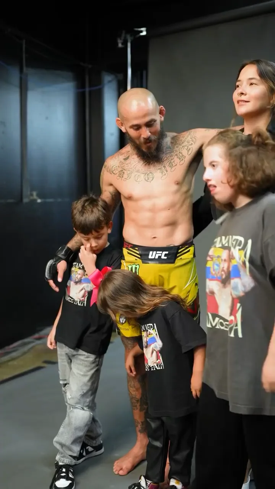

On this page, we'll dive deeper into the life and career of Marlon Vera.
Marlon Vera is a skilled fighter who is known for his tenacity and skill in the octagon.
Outside of his fighting career, Vera is a devoted husband and father.
Bio
Marlon Vera was born on December 2, 1992, in Chone, Manabi, Ecuador. He began training in mixed martial arts at the age of 14 and made his professional MMA debut in 2012.
Vera gained international recognition when he appeared on the UFC reality show, The Ultimate Fighter, in 2014. He won his UFC debut in 2015 and has since fought some of the top bantamweights in the world.
Outside of MMA, Vera is also an accomplished kickboxer and holds a black belt in Brazilian Jiu-Jitsu.
Early Life:
Marlon Vera was born and raised in Chone, Ecuador. Growing up, he was interested in sports and martial arts and began training in judo and jiu-jitsu at the age of 12. After seeing his passion for the sport, Vera's parents supported his decision to pursue a career in MMA.
Professional Career:
After making his professional MMA debut in 2012, Vera fought for several promotions before being signed by the UFC in 2014. Since then, he has faced many top-tier opponents and has become known for his tenacity and skill in the octagon.
Vera is also known for his ability to finish fights. Of his 20 professional wins, 15 have come by way of knockout or submission, making him a dangerous opponent for anyone in the bantamweight division.
Personal Life:
Outside of his fighting career, Vera is a devoted husband and father. He often speaks about the importance of his family and credits them with motivating him to work hard and stay focused on his goals.
Vera is also passionate about giving back to his community. In 2020, he launched the Marlon Vera Foundation, a nonprofit organization dedicated to helping disadvantaged youth in Ecuador. Through the foundation, Vera aims to provide opportunities and resources to young people who may not otherwise have access to them.
Overall, Marlon Vera is a talented and driven fighter who is known both for his skills in the octagon and his commitment to his family and community.